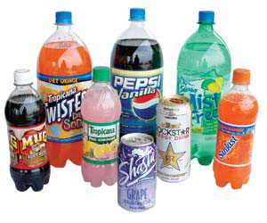

MATTHEW T. STALLBAUMER
These beverages contain two ingredients that can interact to form benzene, a known carcinogen. To view a partial list of drinks that contain these ingredients, visit the
Environmental Working Group
Web site.